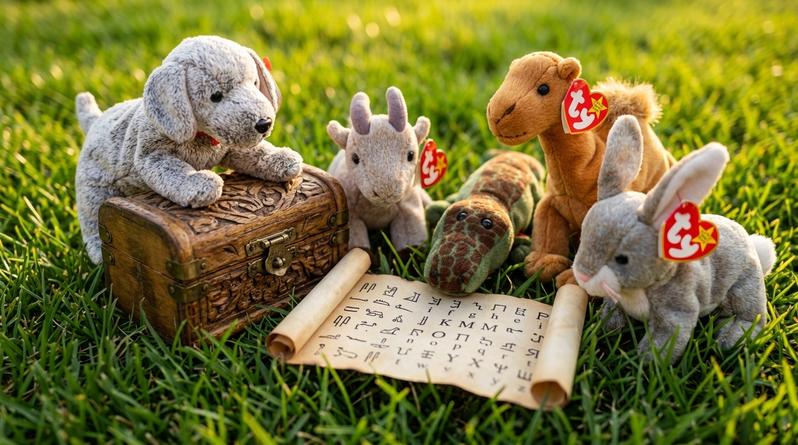
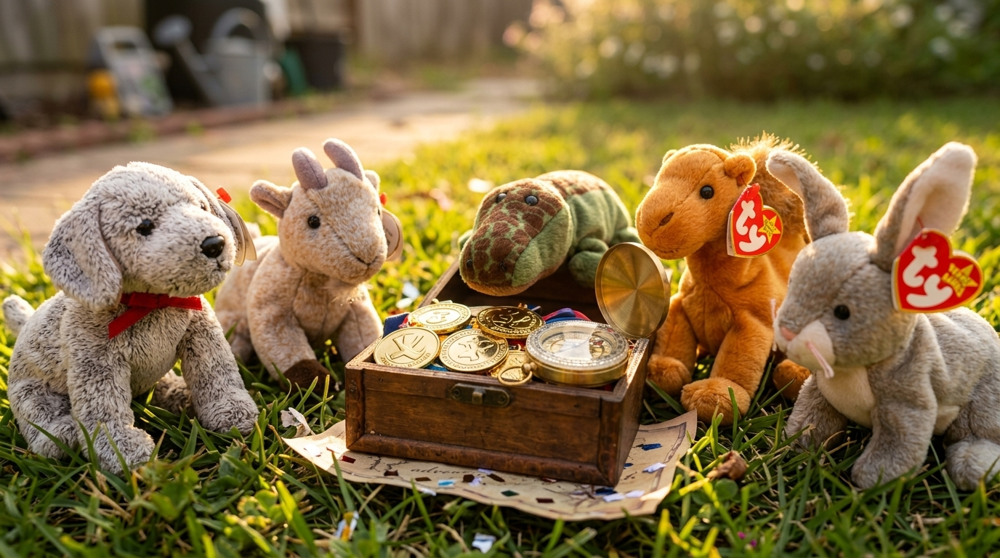

The Mystery of the Phonetic Cipher
Wherein Five Secret Messages are Decoded by the Five Playful Friends to Unlock the Oakwood Treasure
Chapter I — The Locked Chest & The Baffling Inscription
Underneath the golden shade of the Great Oak Tree, a peculiar discovery awaited the five playful companions. Paw, the light-grey speckled puppy whose nose was ever seeking adventure, sniffed out a heavy mahogany chest bound in tarnished brass. Across the front of the box sat five heavy letter-dials, each locked tight. Tucked beneath the handle was an ancient parchment scroll covered in strange, unintelligible symbols.
The five friends crowded around the parchment with wide, curious eyes. Bounce the bunny tilted her head, her long ears twitching. "Look at these mysterious marks!" she cried. "There are horizontal bars over vowels, curved hoods, little accent slashes, and even an upside-down letter e!"
Ali Baba the camel knelt down and squinted at the five lines written upon the scroll:
1. (yū´ nĭ sī kəl)
2. (sûr´ kĭt)
3. (sī´ klōn)
4. (sûr´ kyə lāt)
5. (rē sī´ kəl)
"What could they possibly mean?" asked Buck the goat, scratching his chin beard with his hoof. "They look like secret code, but without a key, we cannot turn the brass tumblers to unlock the treasure!"
Nile the crocodile swished his tail thoughtfully. "A secret cipher always leaves a clue nearby," Nile declared softly. "Let us search every corner of Oakwood Meadow for the missing key!"

Chapter II — The Search Across Oakwood Meadow & The Buried Key
With eager determination, the five friends split up to search the meadow. Bounce hopped through the tall clover patches; Nile glided along the muddy riverbank; Ali Baba scanned the old stone wall; while Paw and Buck explored the roots of the ancient Oak Tree.
Suddenly, Paw let out a sharp, happy bark. "Over here! My paws felt something hard buried in the soil!"
Buck trotted over and used his smooth grey curved horns to nudge away loose stones and damp earth. Working together, Paw dug with his front paws while Buck lifted a heavy slab of mossy stone. Beneath it lay a polished slate tablet, carefully carved by an old scholar.
"It is the Deciphering Key!" cheered Paw. "It explains what every symbol and diacritical mark means using simple, short words!"
Here is the exact stone tablet they unearthed buried beneath the Oak Tree roots:
| Symbol Mark | Name / Mark Type | Sound Quality | Simple Example Words |
|---|---|---|---|
| ā, ē, ī, ō, ū | Macron ( ¯ ) | Long Vowel Sound (says its own name) |
ā as in make, late ē as in feet, me ī as in ice, night ō as in boat, home ū as in cube, use |
| ă, ĕ, ĭ, ŏ, ŭ | Breve ( ˘ ) | Short Vowel Sound |
ă as in cat, hat ĕ as in pet, red ĭ as in sit, pin ŏ as in hot, top ŭ as in cup, sun |
| ə | Schwa ( upside-down 'e' ) | Soft / Unaccented Vowel ("uh") | ə-bout (about), lem-ən (lemon), cam-əl (camel) |
| ´ | Accent Mark ( Primary Stress ) | Stressed Syllable Emphasis | o´-pen (open), pa´-per (paper) |
Chapter III — Deciphering the Five Secret Messages
Carrying the stone tablet back to the mahogany chest, the five friends sat together in a cheerful circle, ready to solve the mystery word by word.
Bounce examined the first cipher: (yū´ nĭ sī kəl). Using the unearthed key, she read: "yū has a macron ū for long u as in ūse; nĭ has a breve ĭ for short i as in pĭn; sī has a macron ī for long i as in īce; and kəl ends with an unaccented schwa ə as in cam-əl. Accent mark yū´ stresses the first syllable. Putting the sounds together... yū-nĭ-sī-kəl... it spells unicycle!" Bounce turned the first brass tumbler to unicycle. Click! The first lock disengaged!
Paw studied the second cipher: (sûr´ kĭt). "sûr makes the sur sound as in surf; kĭt has a breve ĭ for short i as in sĭt. Accent mark sûr´ stresses the first syllable. Together, sûr-kĭt forms circuit—the complete path that begins and ends in the same place!" Paw aligned the second tumbler to circuit. Click! The second lock released!
Buck inspected the third line: (sī´ klōn). "sī has a long i macron ī as in nīght; klōn has a long o macron ō as in hōme, with root cycl meaning wheel or circle. Accent mark sī´ stresses the first syllable. It decodes to cyclone—the spinning vortex of wind!" Buck bumped the third dial into place. Click! The third lock snapped open!
Nile paddled his tail as he decoded the fourth line: (sûr´ kyə lāt). "sûr plus kyə with an unaccented schwa ə as in lem-ən, ending in lāt with a long a macron ā as in lāt. Accent mark sûr´ stresses the first syllable. That spells circulate—to pass from place to place!" Nile rotated the fourth tumbler. Click! The fourth lock popped open!
Finally, Ali Baba read the fifth line: (rē sī´ kəl). "rē has a long e macron ē as in mē; sī is long i macron ī with primary accent sī´; and kəl is the schwa ə ending. It spells recycle—to process materials so they can be used anew!" Ali Baba clicked the fifth tumbler into place.
Chapter IV — The Unlocking & The Oakwood Treasure
As the fifth tumbler clicked into alignment, a resonant golden chime echoed across the sunny glade. The heavy mahogany lid swung open on smooth brass hinges, revealing the long-lost Oakwood Treasure!
Inside lay five gleaming golden medals, each engraved with a symbol honoring one of the friends—a running paw for Paw, horns for Buck, a splash for Nile, a leaping camel for Ali Baba, and a unicycle for Bounce. Beside the medals rested a polished brass mariner's compass and a roll of fresh parchment praising their teamwork, patience, and sharp minds!
The five companions cheered together in high spirits, admiring their shiny medals under the warm afternoon sun. By searching for clues and mastering the phonetic code, they had claimed their true reward!

Week 1 Master Word & Cipher Summary
| Vocabulary Word | Phonetic Cipher Script | Root Origin & Meaning |
|---|---|---|
| unicycle | (yū´ nĭ sī kəl) | Prefix uni- (one) + root cycl (wheel) |
| circuit | (sûr´ kĭt) | Root circ (circle) + Latin ire (to go) |
| cyclone | (sī´ klōn) | Root cycl (wheel/circle) — spinning windstorm |
| circulate | (sûr´ kyə lāt) | Root circ (small circle) — to move around in a loop |
| recycle | (rē sī´ kəl) | Prefix re- (again) + root cycl (wheel) |
| circular | (sûr´ kyə lər) | Root circ (circle) — round in shape |
| semicircle | (sĕm´ ĭ sûr kəl) | Prefix semi- (half) + root circ (circle) |
| cycle | (sī´ kəl) | Root cycl (wheel) — repeating series of events |